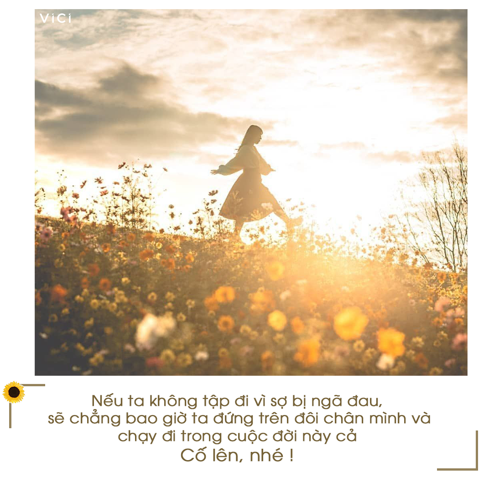
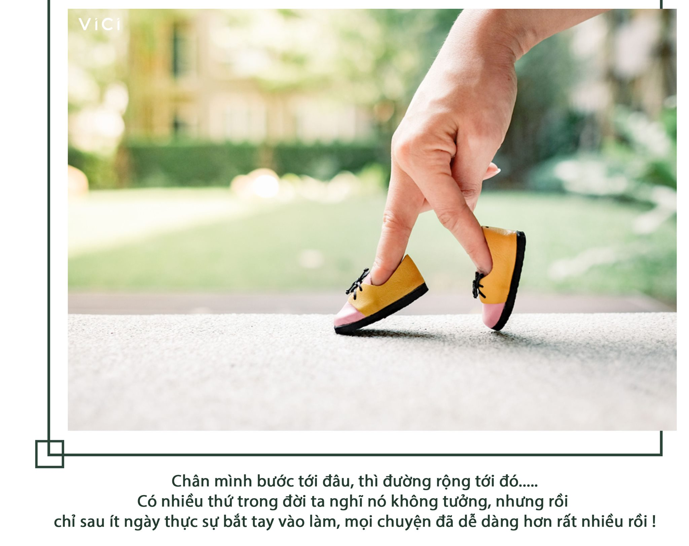

CHẲNG AI CÓ THỂ SỐNG MÃI VỚI NHỮNG ĐIỀU ĐÃ CŨ !By VICI 8 hours agoChú chim nhỏ, không thể sinh ra nếu nằm mãi trong vỏ trứng, không thể bay nếu không nhảy khỏi tổ, không thể làm cha mẹ nếu không chịu học cách hót ! Con người mình, cũng thế thôi ấy mà. Nếu ta không tập đi vì sợ bị ngã đau, sẽ chẳng bao giờ ta đứng trên đôi chân mình và chạy đi trong cuộc đời này cả Nếu ta cứ mãi chẳng chịu mở lời, mở lòng, tất nhiên, sẽ chẳng có tình yêu nào tới với ta cả. Điều tương tự cũng xảy ra khi ta muốn quên một người: Nếu không chọn vui trở lại, sống khác đi, gặp thêm người khác, kết cục sẽ chỉ là đau buồn vô vọng, trong khi thế giới luôn đủ người dành cho chúng ta, bất kể em có tin vào điều đó hay không.  Nếu ta cứ chọn làm đứa trẻ lông bông mãi, sẽ chẳng có người trưởng thành, với những thành công, trách nhiệm, tình thương nào, phải không? Nếu ta cứ làm mãi một việc, không có gì thay đổi, ngoài việc chúng ta già đi, sẽ chẳng có cuộc sống mới, kinh tế mới. Nếu ta không mua thẻ tập, sẽ không có thân hình đẹp, nếu ta không mua vé, sẽ chẳng có chuyến du lịch nào, nếu ta không mua máy ảnh, cũng sẽ không có khoảnh khắc nào được ghi lại Không nói rằng cuộc sống cũ là tệ hại và chúng ta phải vứt bỏ nó, mà đơn giản chỉ là nếu ta không dám làm điều mới, sẽ chẳng bao giờ ta biết mình có thể làm gì, đi tới đâu cả ! Vậy nên, hãy luôn dám làm thêm điều khác với những gì ta đang làm, bước ra khỏi vòng an toàn, đi tới những miền đất mới, để có thể có thể biết mình mạnh mẽ, giỏi giang tới đâu nhé! Chỉ cần ta của hôm nay tốt hơn hôm qua một chút, cũng đã là thành công rồi ! Cố lên, nhé !! __________________________________________ Một đứa trẻ nhỏ nguệch ngoạc một vài nét, ta gọi là vẽ bậy. Nhưng vẫn là đứa trẻ đó, vẽ thêm mười bức nữa, ta gọi là sở thích. Thế rồi sau hàng trăm hàng ngàn bức vẽ khác, ta phải gọi đó đam mê, là cuộc sống của một đời người Nếu ngay từ bức tranh đầu tiên, vẽ xong một bức vì nó xấu, vì bị chê bai mà bỏ cuộc,thì đâu còn câu chuyện nào để nói đâu. Cuộc sống chúng mình cũng vậy thôi em. Khi ta bắt đầu một chuyện gì mới, có thể mọi việc sẽ rất khó khăn.  Giống như một chiếc tên lửa bay vào không gian, chặng đường tốn nhiên liệu nhất trong hàng trăm ngàn dặm đường lại chính là những phút đầu tiên khi nó rời bệ phóng, thoát khỏi lực hút ghì ép nó vào địa cầu. Có nhiều thứ trong đời ta nghĩ nó không tưởng, vô chừng lắm, nhưng rồi chỉ sau ít ngày thực sự bắt tay vào làm thôi, mọi chuyện đã dễ dàng hơn rất nhiều rồi. Như chuyện học những bài đầu tiên, làm công việc đầu tiên, bắt chuyện rồi yêu người đầu tiên. Cứ bắt đầu đi, cứ bước đi, rồi con đường sẽ tự mở, nghĩ nhiều, sợ nhiều chỉ khiến ta đứng yên một chỗ được thôi! Làm đi, học đi, chơi đi, yêu đi, đi đi.... #vici |
|
|